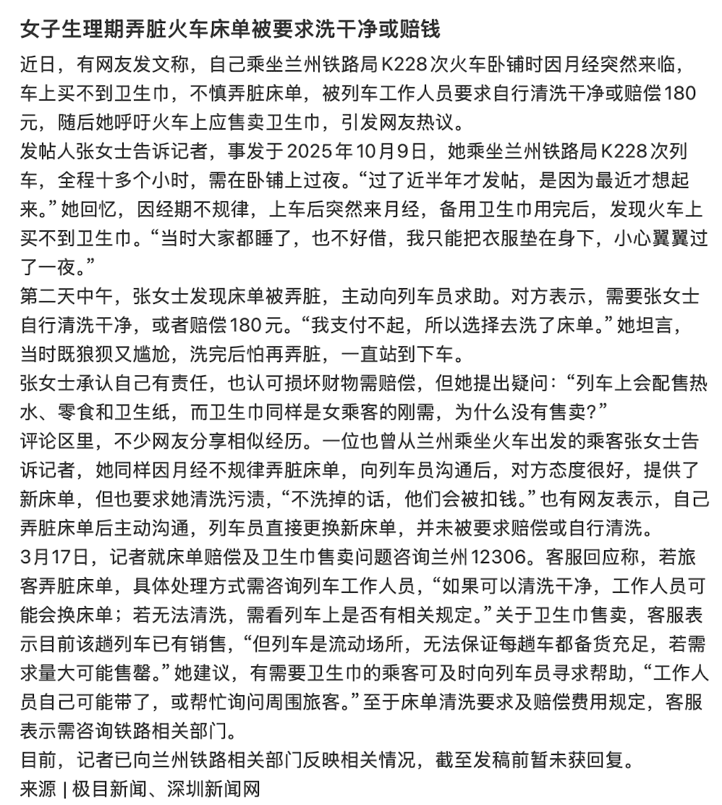

@wodanggangqiang 另外为什么要她自己清洗，清洗卧铺上的污渍不是铁路上有关的保洁什么的负责的吗，难道没有这事床单你就不洗了？火车上弄脏床铺的多了去了，什么方便面汤，泥土灰尘，也没见都要自己清洗啊，我上次坐火车的时候吃巧克力面包把床单弄脏了，0个人让我清理啊。


这个女生发现自己来月经以后，火车上也买不到卫生巾，她还用衣服垫在了自己身下，专门去找了列车的工作人员，反应床单被弄脏了的事情，列车员要求赔偿180元或者把床单洗干净，因为她已经拿不出这笔钱，于是用冷水把床单洗干净，我就想问问：火车上为什么不卖卫生巾？火车票价格应该包含了清理费，为何 https://t.co/q1D6g5Lzph